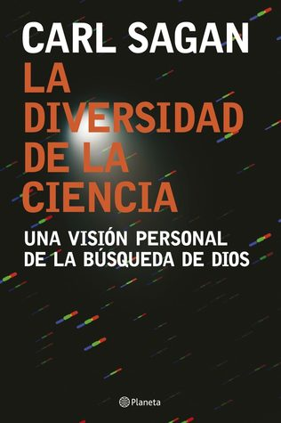

La diversidad de la ciencia: Una visión personal de la búsqueda de Dios
Reseña por Jorge I. Zuluaga

Ver reseña en GoodReads (necesita cuenta)
Como deben saber, el libro contiene una (impecable) transcripción de una serie de conferencias sobre "teología natural" (la búsqueda de dios o dioses a través de la inquisición intelectual y el razonamiento, en lugar de la iluminación) que dicto Carl Sagan en Escocia en 1985. Las conferencias hacen parte de unos ciclos sobre el tema que se vienen dictando allí desde 1888 y en los que han participado científicos, humanistas y teólogos (https://www.giffordlectures.org/).
En el texto Sagan brilla como siempre por su claridad y respeto hacia el lector, incluso al tratar temas tan delicados como la existencia de dios, las experiencias religiosas, la responsabilidad de la religión en el futuro de la humanidad y otras cosas en las que muchos científicos, al ser cuestionados, ciertamente no seríamos políticamente correctos.
Las ideas sobre dios y la religión que expone Sagan en estas charlas son cuando menos aleccionadoras, tanto para quienes no somos creyentes, como para quiénes lo son.
En particular retaría a cualquier creyente o agnóstico inteligente y extrovertido (que declare abiertamente su posición positiva o neutra frente a dios) de que leyera la conferencia "la hipótesis de dios" en este volumen y que después sostuviera sus convicciones sin sentir un poco de vergüenza. Y no porque Sagan destruya la idea de dios de un plumazo (nadie ha podido hacerlo nunca en realidad), sino porque sus impecables razonamientos, sus citas y ejemplos, muestran lo increíblemente insatisfactorio de este concepto.
No me cabe la menor duda que frente a cuestiones de fe solo hay dos posibilidades: o eres un creyente vergonzante (alguien que no puede resistir a creer en cosas que no puede pensar o mostrar, pero que no se siente particularmente orgulloso de ellos y más bien un poco avergonzado) o eres un ateo sin vergüenza.
Pero también retaría a todos los no creyentes, o a los ateos sin vergüenza para que leyeran el capítulo "los crímenes contra la creación" sin reconocer por un momento que la religión, usada apropiadamente, podría tener actualmente el poder para revertir algunos de los problemas más acuciantes de la sociedad y el medio ambiente.